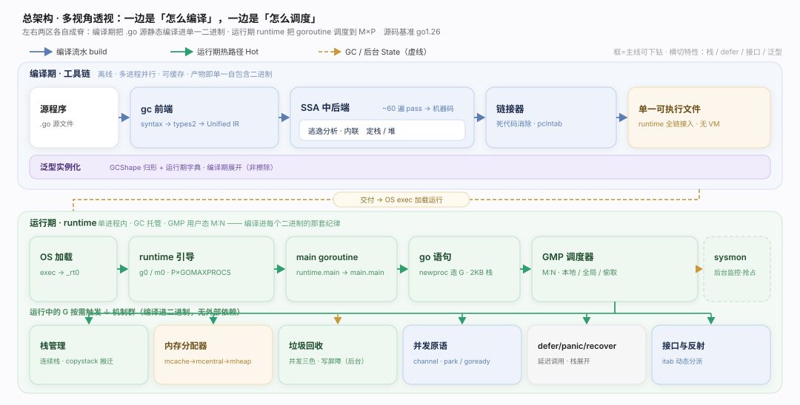
Go 原理 · 全景主线框架
3 图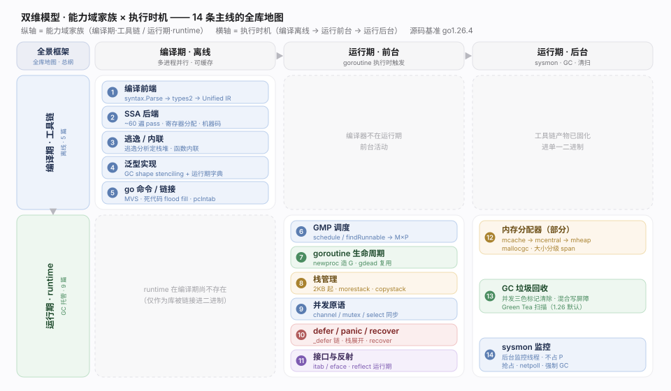
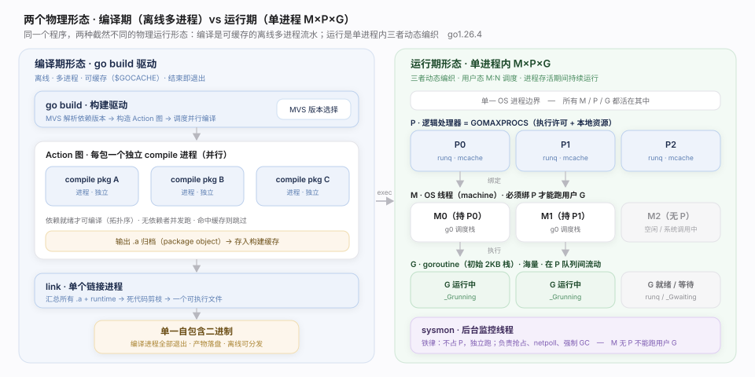
定位
本篇是全库的地图与总纲。用"双维模型"把 14 条主线归位（能力域家族 × 执行时机），给出总架构图、编译/运行两期的物理形态、接触面 × 能力域 依赖矩阵，并声明 Go 区别于其他语言实现的三条贯穿性事实。读全库从这里开始，遇到"某机制属于哪条主线"的疑问回这里查依赖矩阵。 源码基准 go1.26.4（~/workdir/go），一切断言以它为准。
一句话总纲
Go 是一套「静态编译产单一自包含二进制 + GC 托管非分代非压缩并发运行时」的语言实现：编译期工具链（gc 前端 syntax→types2→Unified IR → 逃逸/内联定栈堆 → buildssa+~60 遍 SSA pass → 机器码 → 链接器死代码 flood fill+pclntab 布局）把源程序静态编译进二进制；运行期 runtime 以 GMP 用户态 M:N 调度多路复用 goroutine（连续可增长栈）到少量 OS 线程，用三级分配器（mcache/mcentral/mheap）供内存、并发三色标记清除 GC（混合写屏障维持不变式、仅极短 STW）自动回收、channel+sudog 做 CSP 同步、defer 链承载 panic/recover、iface/itab 支撑接口与反射——编译期与运行期靠「编译器插桩（写屏障/栈检查/类型描述符）」缝合成一个整体。
Go 原理 · GMP 调度
9 图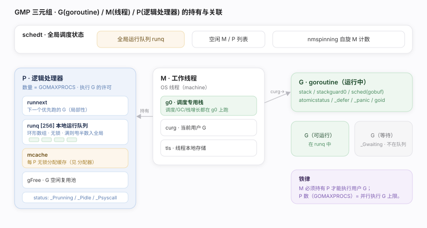
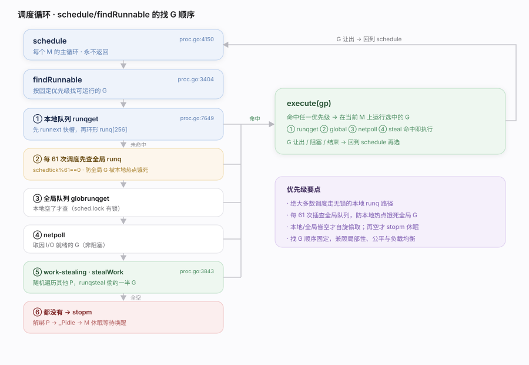
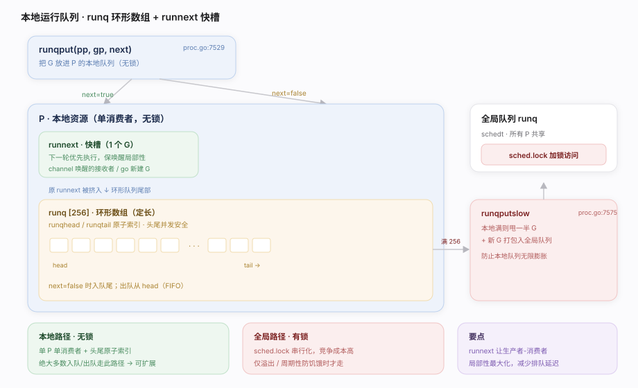
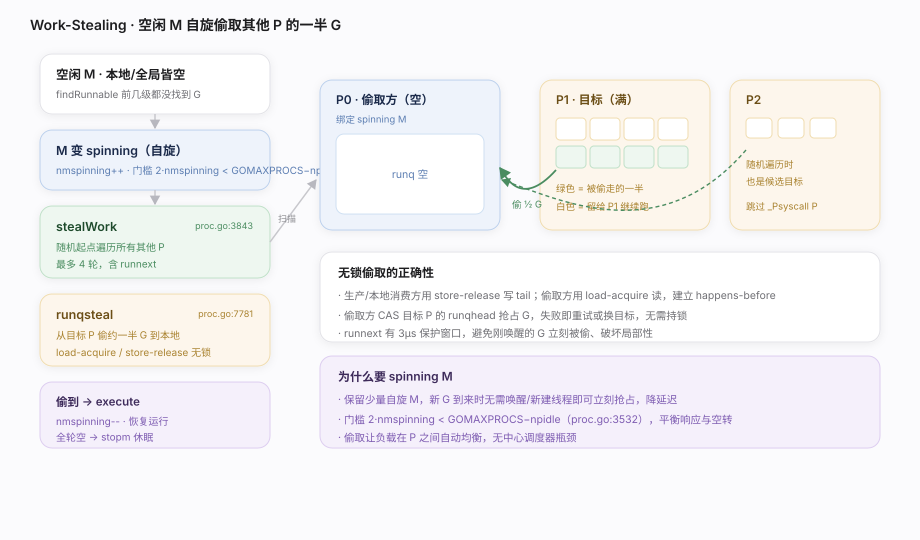
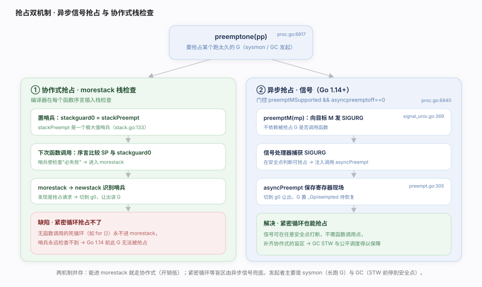
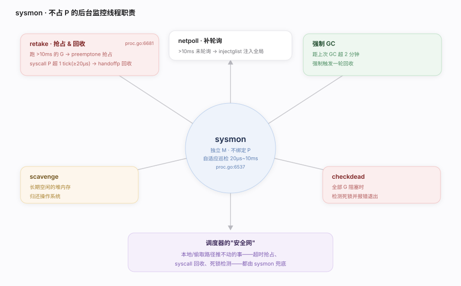
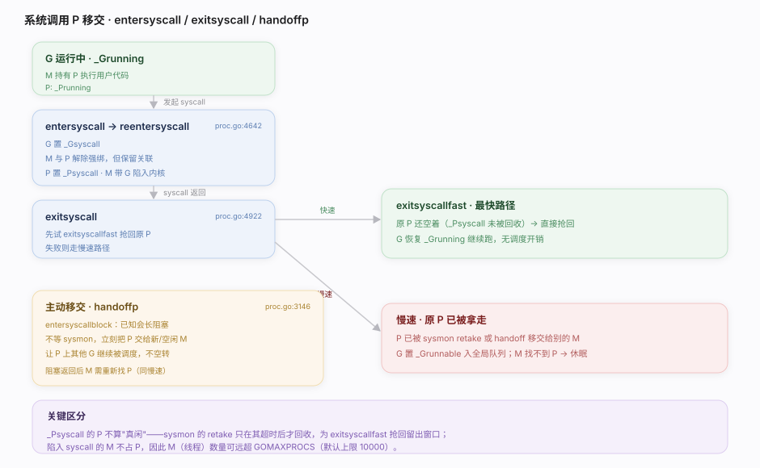
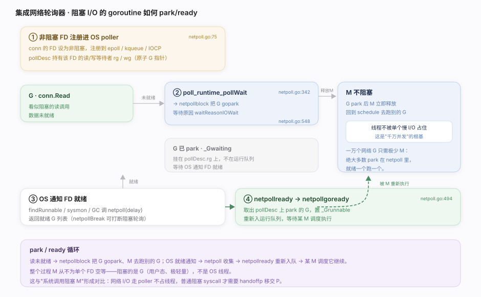
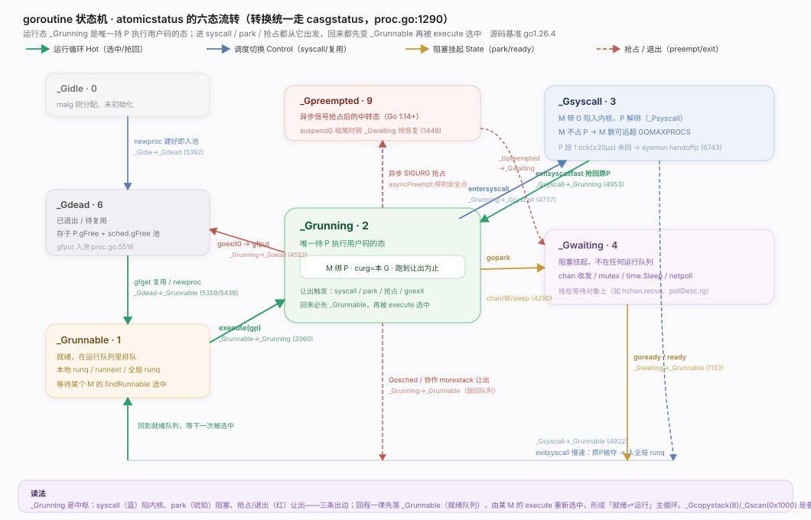
定位
本篇是运行期的灵魂主线——goroutine 如何被多路复用到 OS 线程上跑。属"调度能力域"的核心，向下依赖【栈管理】（抢占靠栈检查、切换栈靠 g0）、【分配器】（P 持有 mcache），向上被【goroutine 生命周期】【并发原语】驱动（park/ready 都经调度器）。系统调用移交与网络 poller 是它的两个深化，不单列主线。源码基准 go1.26.4（~/workdir/go/src/runtime）。
一句话总纲
Go 用用户态 M:N 的 GMP 调度器把海量 goroutine 多路复用到少量 OS 线程：M 必须持 P（数量=GOMAXPROCS）才能跑 G，schedule→findRunnable 按「本地 runq/runnext → 每 61 次查全局 → netpoll → work-stealing 偷半数」找活，runqput 用 runnext 快槽保唤醒局部性、本地队列满则甩一半进全局；跑太久的 G 靠「协作式 morestack 栈检查哨兵 + 异步 SIGURG 信号」双机制抢占，系统调用时 M 带 G 陷内核但 P 经 handoffp 移交不空转、网络 I/O 则用非阻塞 FD + netpollblock 让 G park 而 M 不阻塞，sysmon 不占 P 兜底超时抢占/syscall 回收/死锁检测——全程绝大多数入队出队走无锁本地路径。
调优要点
- GOMAXPROCS（P 的数量，默认 = CPU 核数）——并行执行 G 的上限。1.26 起可感知 cgroup CPU 配额。
- GODEBUG=schedtrace=1000（每 1000ms 打印调度器状态）、scheddetail=1（详细）——观测 M/P/G 数量与队列。
- GODEBUG=asyncpreemptoff=1——关异步抢占（调试用，会退回纯协作式）。
- runtime.LockOSThread/UnlockOSThread——把 G 钉在特定 M（cgo、OpenGL 等需线程亲和的场景）。
- runtime.Gosched——主动让出，把当前 G 放回全局队列。
常见误区与工程要点
- 误区：GOMAXPROCS 是线程数上限。 不是。它是 P 的数量 = 并行执行 G 的上限；M（线程）数量可远超它（陷入 syscall 的 M 不占 P，数量由 syscall 并发决定，上限默认 10000）。
- 误区：goroutine 由 OS 调度。 不是。goroutine 是用户态调度（GMP 在 runtime 内），OS 只调度 M（线程）。M:N 就是"N 个 G 映射到 M 个线程"。
- 误区：for {} 死循环能被抢占（老 Go）。 Go 1.14 前不能（纯协作式，无 morestack 检查点）；1.14+ 靠异步信号抢占才可以。
- 误区：网络 I/O 阻塞会占满线程。 不会。阻塞的网络 G 被 netpollblock park，M 去跑别的 G——这正是 Go 高并发网络的根基。
- 归属提醒：栈增长/抢占哨兵机制在【栈管理】展开，本篇只讲调度侧触发；channel 的 park/ready 由本篇的 gopark/goready 承载但语义在【并发原语】。
Go 原理 · goroutine 生命周期
4 图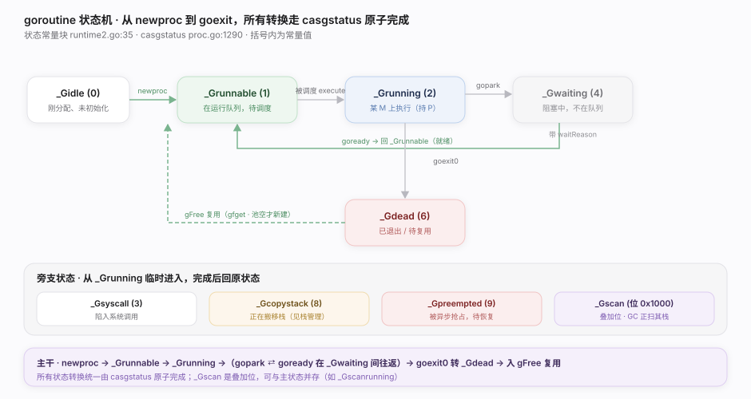
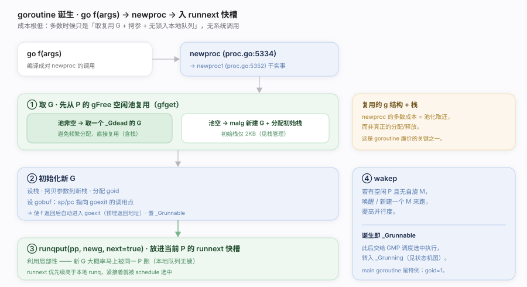
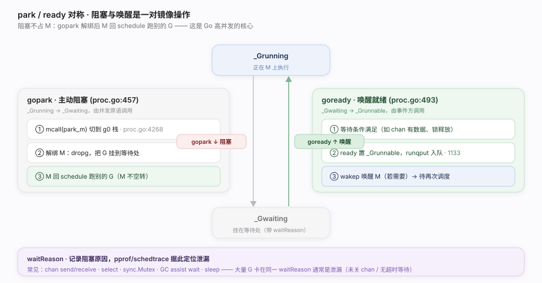
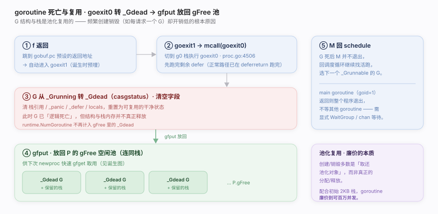
定位
本篇讲一个 goroutine 从 go f 诞生到 goexit 消亡的全过程与状态机。属"调度能力域"，是【GMP调度】的"被调度对象"视角补充——调度篇讲"怎么选 G 跑"，本篇讲"G 怎么生、怎么在运行/阻塞/就绪间转、怎么死并被复用"。依赖【栈管理】（生时分配栈）、承载【defer/panic】（退出时执行 defer）、被【并发原语】驱动状态转换（park/ready）。源码基准 go1.26.4（~/workdir/go/src/runtime/proc.go）。
一句话总纲
一个 goroutine 是「g 结构 + 连续栈 + 状态」：go f 编译成 newproc，优先从 P 的 gFree 池取复用 _Gdead 的 G（池空才新建）、拷参并预设返回地址指向 goexit、置 _Grunnable 入 runnext 快槽并按需 wakep；被调度进 _Grunning 后，阻塞走 gopark（转 _Gwaiting、带 waitReason、让出 M 去跑别的 G、挂到 channel/semaRoot 等待处），唤醒走 goready（转回 _Grunnable 入队）——所有阻塞最终归到这对 park/ready；f 返回进 goexit0 转 _Gdead、经 gfput 连同栈放回 gFree 池复用——状态转换统一由 casgstatus 原子完成，「池化复用 + 阻塞即让出」使 goroutine 廉价到可百万并发。
调优要点
- GODEBUG=schedtrace=1000：观测 G 的运行/可运行/等待数量随时间变化。
- runtime/pprof 的 goroutine profile：dump 所有 G 的栈，定位泄漏（大量 G 卡在同一 waitReason）。
- GODEBUG=gctrace=1 间接反映 G 栈扫描量。
- goroutine 泄漏排查：看 pprof 里 _Gwaiting 且 waitReason 集中的 G——通常是没关的 channel、没超时的等待。
常见误区与工程要点
- 误区：goroutine 创建很贵。 不。多数是从 gFree 池取复用 G + 拷参 + 无锁入队，成本远低于 OS 线程创建；初始栈仅 2KB。
- 误区：阻塞的 goroutine 占着线程。 不。gopark 让 G 让出 M，M 去跑别的 G——阻塞的是 G 不是 M。
- 误区：可以用 goid 做 goroutine-local storage。 Go 故意不暴露 goid（getg.goid 是内部字段），因为它鼓励用 channel/context 传递而非线程本地状态。
- 误区：主 goroutine 阻塞了别的 goroutine 还能跑完。 main.main 返回程序立即退出，不等其他 goroutine——需要显式 sync.WaitGroup/channel 等待。
- 归属提醒：G 被"怎么选中执行"在【GMP调度】；park/ready 的具体触发者（channel/锁）在【并发原语】；退出时 defer 的执行细节在【defer/panic】；栈的分配/搬移在【栈管理】。
Go 原理 · 栈管理
4 图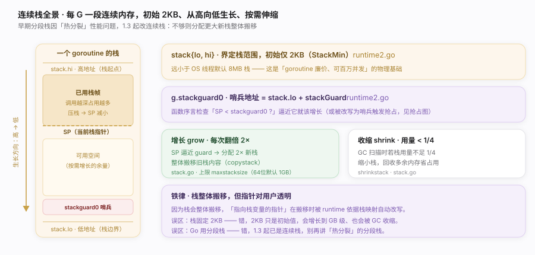
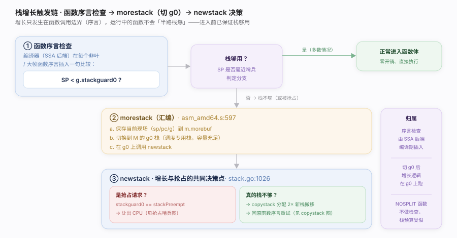
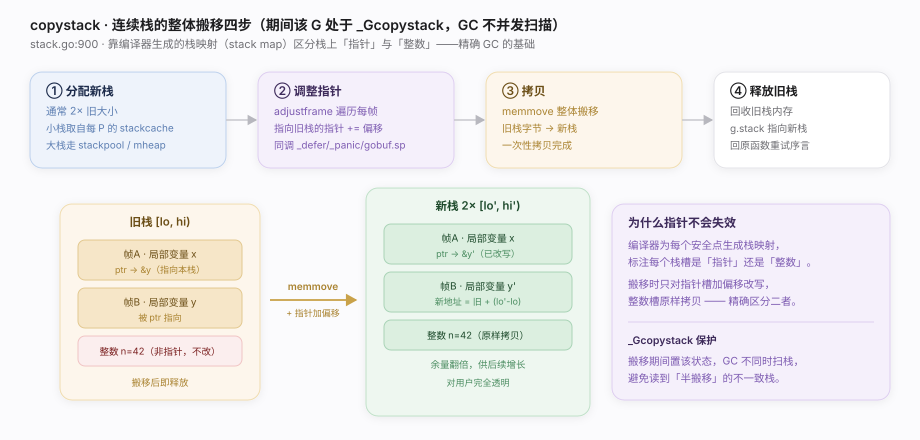
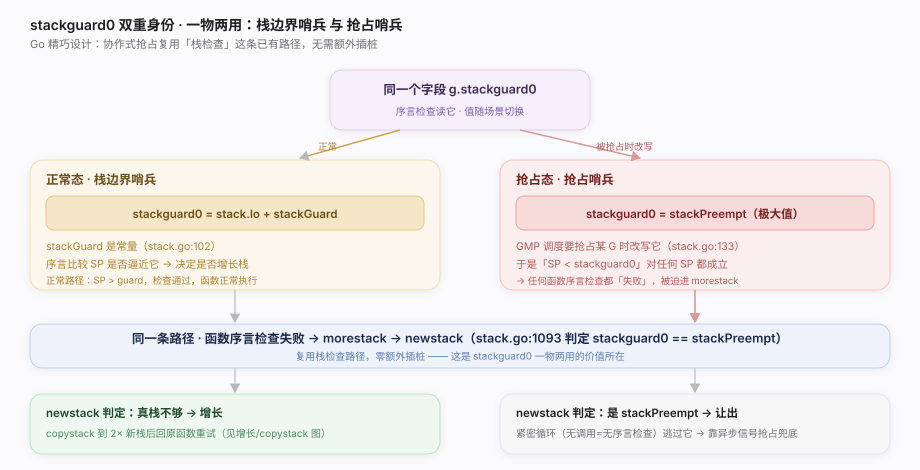
定位
本篇讲 goroutine 的连续可增长栈——为什么 goroutine 能初始只占 2KB 却不怕栈溢出。属"内存能力域"，与【GMP调度】深度耦合（抢占哨兵借用 stackguard0、栈切换在 M 的 g0 上做）、被【GC】依赖（扫描栈找根、收缩栈）、依赖【SSA后端】在函数序言插入栈检查、承载【defer/panic】的栈上记录。源码基准 go1.26.4（~/workdir/go/src/runtime）。
一句话总纲
Go 的 goroutine 用连续可增长栈：初始仅 2KB、从高向低生长，编译器在函数序言插入「SP < g.stackguard0」检查，不够就进 morestack（切到 M 的 g0 栈）→ newstack 决策 → copystack 分配 2× 新栈、按编译器生成的栈映射精确调整所有栈内指针后整体 memmove 搬移（对用户透明）、GC 扫描时用量不足 1/4 则 shrinkstack 收缩；stackguard0 一物两用——正常是栈边界哨兵，被抢占时被【GMP调度】改写成 stackPreempt 让任何序言检查失败从而在函数边界让出（复用栈检查路径、零额外插桩，紧密循环则靠异步信号兜底）——这套「小起步 + 整体搬移」是 goroutine 廉价到可百万并发的物理基础。
调优要点
- runtime/debug.SetMaxStack：设单 goroutine 栈上限（默认 64 位 1GB）；无限递归会撞这个上限而非无限增长。
- GODEBUG=efence=1 等调试栈问题；GOTRACEBACK 控制 panic 时栈回溯详细度。
- 栈溢出（runtime: goroutine stack exceeds ... limit）通常是无限递归——不是"栈太小"，调 SetMaxStack 无用，应修递归。
- 减少栈增长开销：避免深调用链上反复跨越栈边界的热点函数（会反复 copystack）。
常见误区与工程要点
- 误区：Go 用分段栈。 早期是（1.2 及以前），因"热分裂"（hot split：栈边界处反复增减栈段）性能问题，1.3 起改连续栈。别再讲分段栈。
- 误区：goroutine 栈固定 2KB。 2KB 只是初始值，会按需增长到 GB 级、也会被 GC 收缩。
- 误区：栈搬移后指针会失效。 不会。copystack 用栈映射精确调整所有栈内指针，对用户透明——这正是连续栈能工作的前提。
- 误区：抢占需要单独的检查插桩。 协作式抢占复用栈检查路径（改 stackguard0 为哨兵），零额外插桩；只有异步抢占才用信号。
- 归属提醒：函数序言的栈检查由【SSA后端】编译期插入；抢占的发起在【GMP调度】（sysmon/GC 改哨兵、发信号）；栈扫描找根、收缩时机在【GC】——本篇讲栈本身的伸缩机制。
Go 原理 · 内存分配器
5 图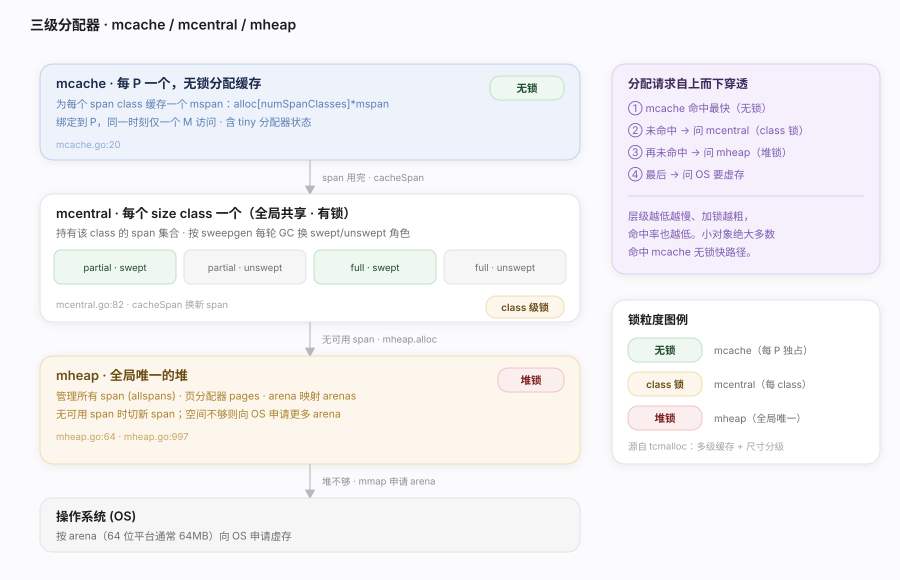
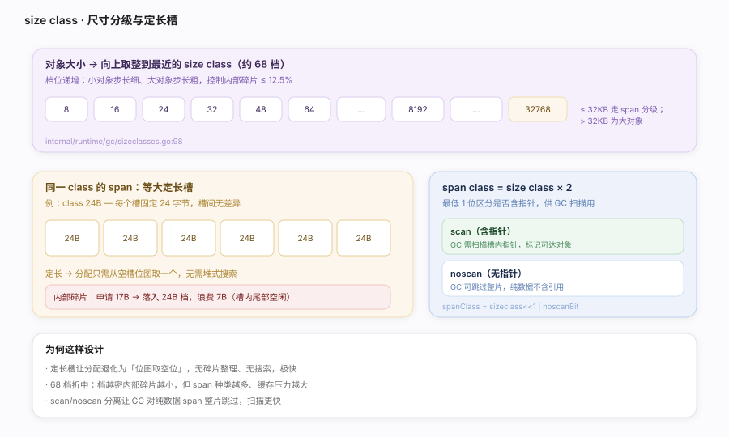
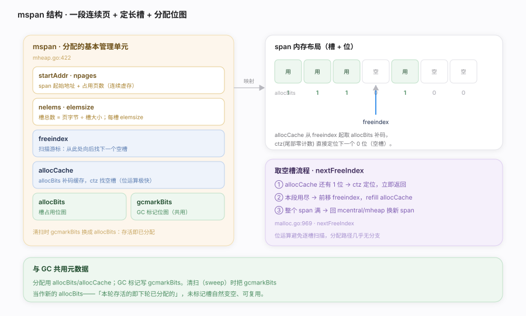
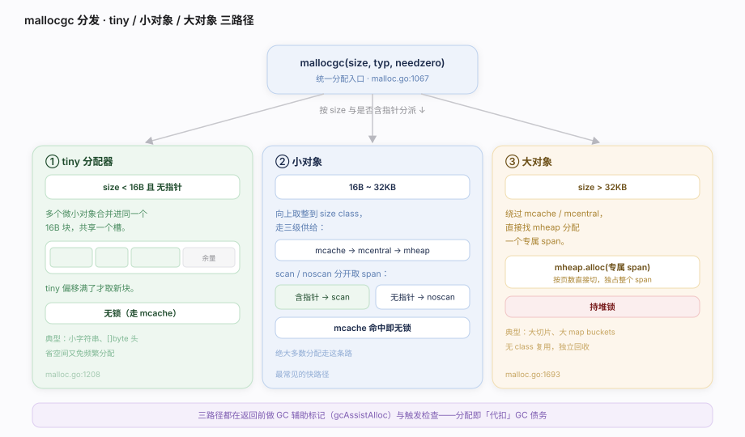
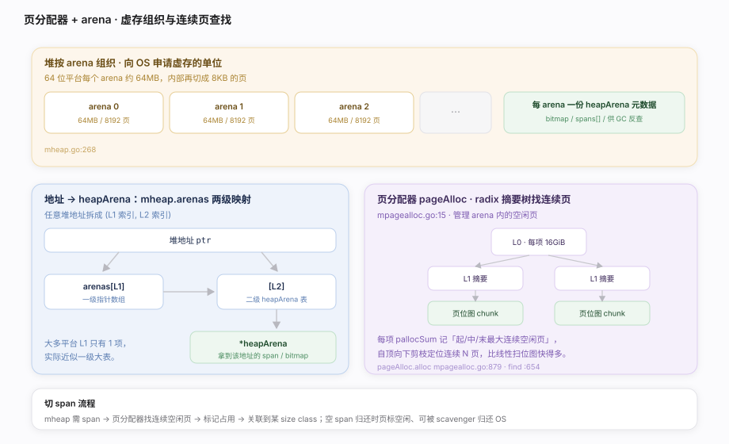
定位
本篇是运行期的"供给侧"——对象在哪、怎么快速分配出来。属"内存能力域"，向上被所有分配（new/make/字面量/逃逸对象）依赖，向下与【GC】共用 span 元数据（mark bits、清扫复用）、每个 P 持有的 mcache 由【GMP调度】提供无锁上下文。是否走堆由【逃逸分析】在编译期决定，本篇只讲"堆上怎么分"。源码基准 go1.26.4（~/workdir/go/src/runtime）。
一句话总纲
Go 堆分配器承 tcmalloc 之设计，按 size class 把对象向上取整分级，用「mcache（每 P 无锁，含 tiny 分配器合并 <16B 微对象）→ mcentral（每 class 全局有锁，partial/full × swept/unswept 按 sweepgen 换角色）→ mheap（全局堆，页分配器以 radix 摘要树 O(快) 找连续空闲页、arena 映射表 O(1) 反查堆地址）」三级供给：mallocgc 分发器把 <16B 无指针走 tiny、16B~32KB 走三级、>32KB 直分 mheap 专属 span，scan/noscan 分 span 让 GC 跳过无指针对象；对象在 mspan 定长槽里靠 allocCache 位运算极速找空位——绝大多数小对象命中 mcache 无锁快路径，size class 分级从根上免除外部碎片。
调优要点
- GODEBUG=allocfreetrace=1：跟踪每次分配/释放（极慢，调试用）。
- GODEBUG=madvdontneed=1：控制归还 OS 的 madvise 策略。
- runtime.ReadMemStats 的 HeapInuse/HeapIdle/HeapReleased/Mallocs/Frees：观测堆用量与分配次数。
- runtime/pprof 的 heap profile（-alloc_space/-inuse_space）：定位分配热点。
- 减少分配的工程手段：sync.Pool 复用对象（见【并发原语】）、预分配 slice 容量、避免小对象逃逸（见【逃逸分析】）。
常见误区与工程要点
- 误区：Go 每次分配都要加锁。 不。小对象绝大多数命中 mcache（每 P 无锁），只有回退到 mcentral/mheap 才加锁——这是分配可扩展的关键。
- 误区：size class 无碎片。 有内部碎片——请求向上取整到 class（申请 17B 占 24B）。tcmalloc 式分级是拿碎片换分配速度与无外部碎片。
- 误区：大对象也走 mcache。 不。> 32KB 直接 mheap，绕过缓存层。
- 误区：make([]T, n) 一定在堆。 不一定。未逃逸的小 slice 由【逃逸分析】判定后分配在栈上，根本不经本分配器。
- 误区：Go 堆会压缩以消碎片。 不会。GC 非压缩（见【GC】），靠 size class 分级从根上避免外部碎片，而非事后压缩。
- 归属提醒：对象"该不该上堆"由【逃逸分析】定；span 的 mark bits 语义与清扫时机在【GC】；每 P 的 mcache 无锁上下文来自【GMP调度】的 P。
Go 原理 · 垃圾回收
7 图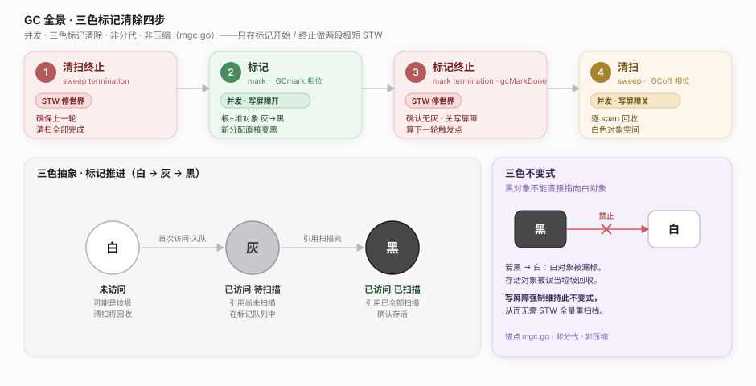
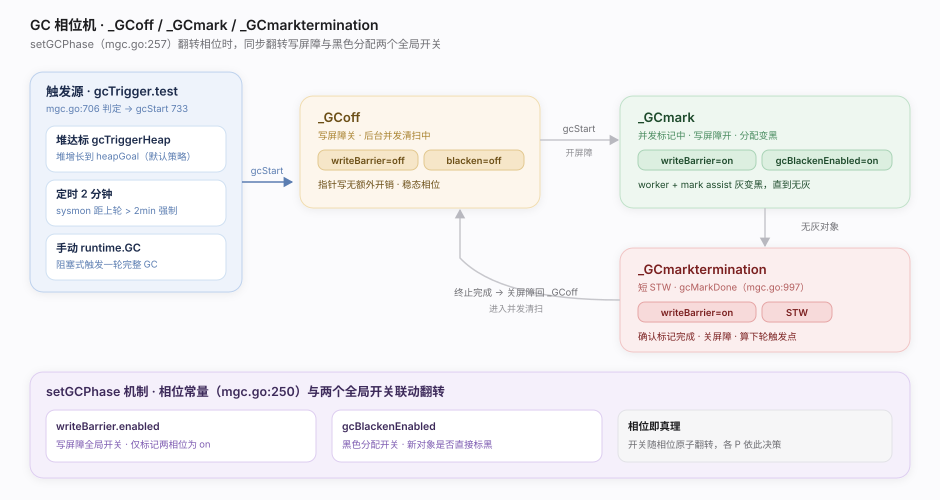
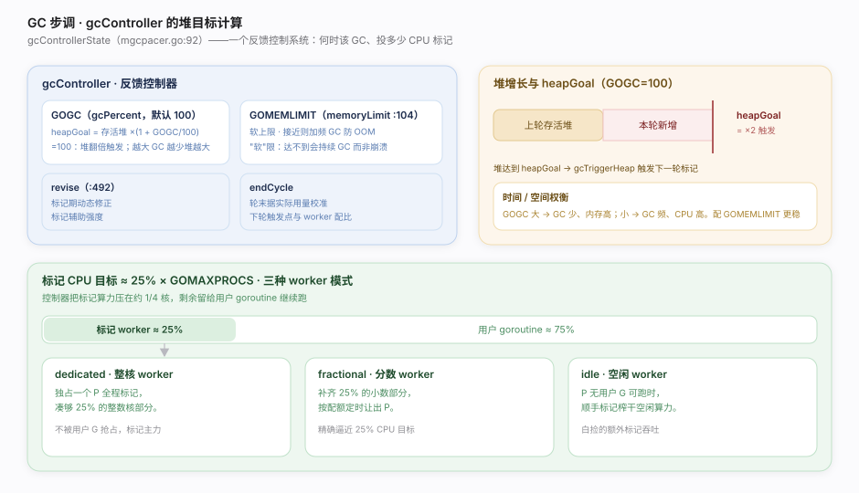
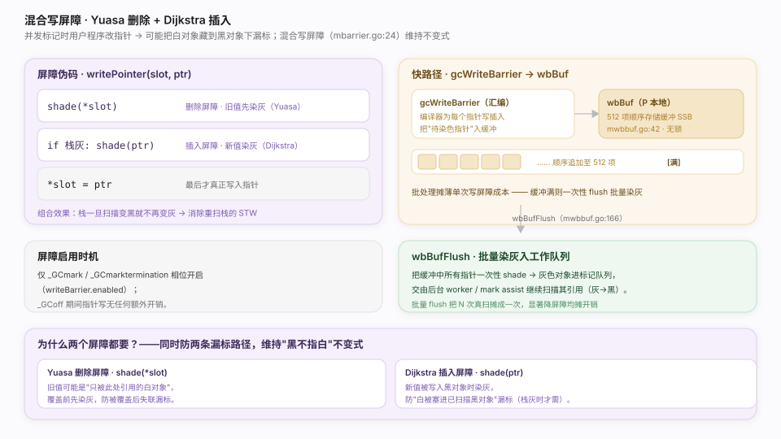
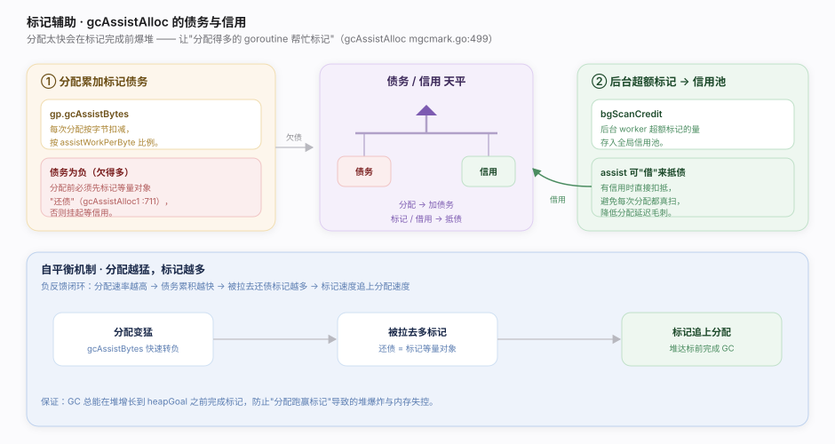
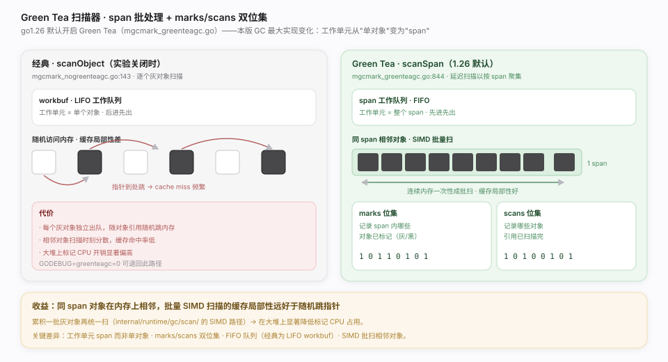
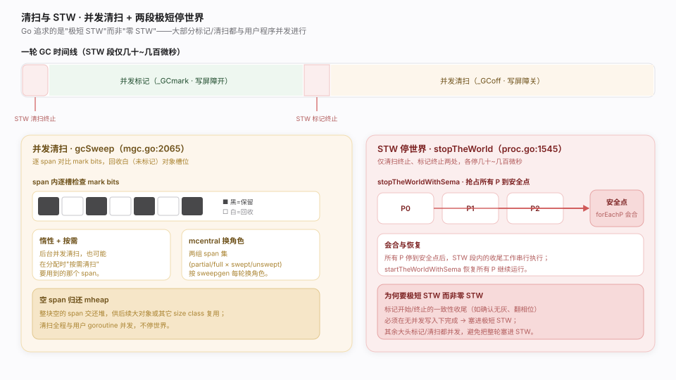
定位
本篇是运行期的第二条灵魂主线——自动内存回收如何与用户 goroutine 并发进行。属"内存能力域"，向下依赖【分配器】（span 的 mark bits、清扫复用）、【栈管理】（扫描/收缩 goroutine 栈找根）、【GMP调度】（STW 停世界、后台标记 worker 占用 P），并依赖【SSA后端】在编译期为每个指针写插入写屏障。源码基准 go1.26.4（~/workdir/go/src/runtime）。
一句话总纲
**Go 的 GC 是并发三色标记清除、非分代非压缩：gcController 按 GOGC（堆翻倍触发）与软上限 GOMEMLIMIT 定堆目标 heapGoal，达标即 gcStart 进 _GCmark 相位（开混合写屏障、分配变黑），后台标记 worker（约 25% CPU）+ 分配过猛的 goroutine 被 gcAssistAlloc 拉来「还债」一起把根（栈/全局）与堆对象灰变黑，1.26 默认用 Green Tea 按 span 批处理（marks/scans 双位集 + FIFO 队列 + SIMD）扫描以提升缓存局部性；混合写屏障（Yuasa 删除 shade(*slot) + Dijkstra 插入 shade(ptr)，经 512 项 wbBuf 批量 flush）维持「黑不指白」不变式从而免去重扫栈；标记完 gcMarkDone 短 STW 后进 _GCoff 并发清扫回收白对象——全程仅标记开始/终止两段几十微秒级 STW。**
调优要点
- GOGC（默认 100）：堆增长多少百分比触发下轮 GC。调大减 GC 频率增内存；GOGC=off 关 GC。
- GOMEMLIMIT（软内存上限，默认无限）：把总内存压在限额内，配 GOGC=off 可做"纯内存驱动"GC。
- runtime.GC：手动阻塞式触发一轮完整 GC。
- debug.SetGCPercent / debug.SetMemoryLimit：运行期动态调 GOGC / memoryLimit。
- runtime.SetFinalizer / runtime.AddCleanup（1.24+）：对象回收前的清理钩子（cleanup 是 finalizer 的更安全替代）。
常见误区与工程要点
- 误区：Go GC 是分代的。 不是。mgc.go:6 明写"非分代、非压缩"。无年轻代/老年代，无对象晋升。
- 误区：Go GC 会移动/压缩对象。 不会。非压缩——对象地址稳定，这也是能安全传裸指针给 cgo（配 pinning）的前提。
- 误区：并发标记要重扫所有栈。 不用。混合写屏障（删除+插入）的设计目标正是消除重扫栈的 STW——栈扫黑后不再变灰。
- 误区：Go 追求零 STW。 不。是极短 STW（标记开始/终止两段、几十微秒），不是零；换来的是不必把整个标记/清扫塞进 STW。
- 误区：GOGC 越小越好。 不一定。GOGC 小则 GC 频繁、CPU 开销大；大则内存高。是时间/空间权衡，配 GOMEMLIMIT 更稳。
- 归属提醒：写屏障的编译期插入在【SSA后端】的 writebarrier pass 展开；栈扫描/收缩在【栈管理】；span 的 mark bits 与清扫复用在【分配器】——本篇讲 GC 算法本身。
Go 原理 · 并发原语
7 图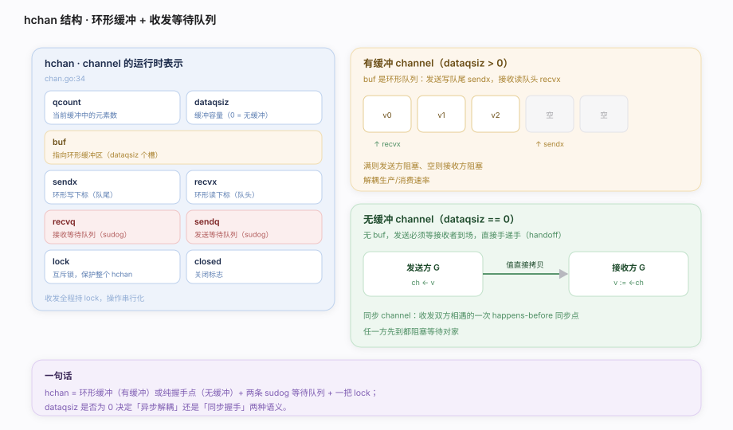
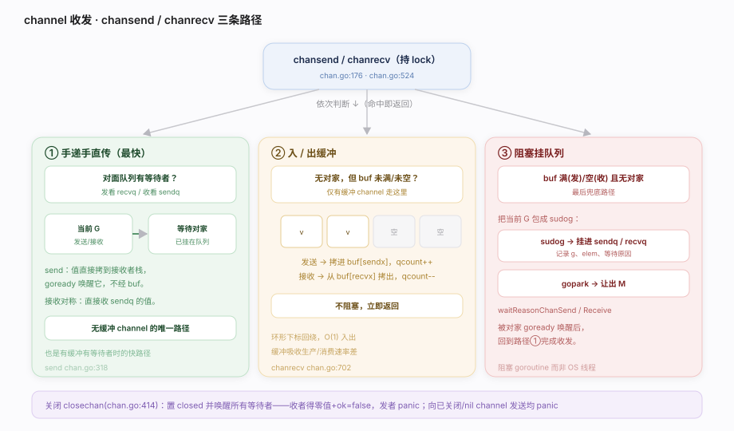
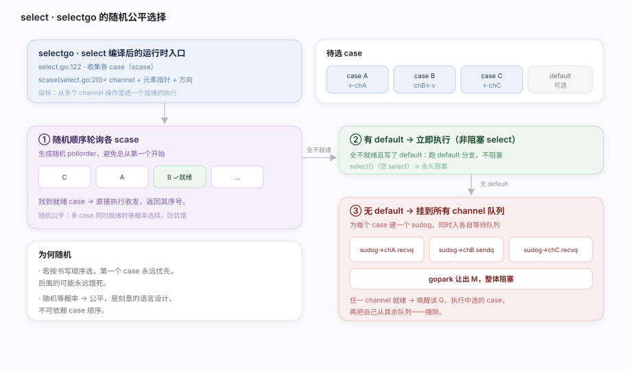
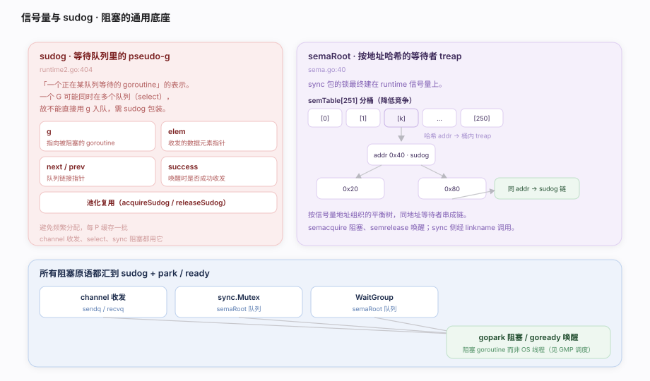
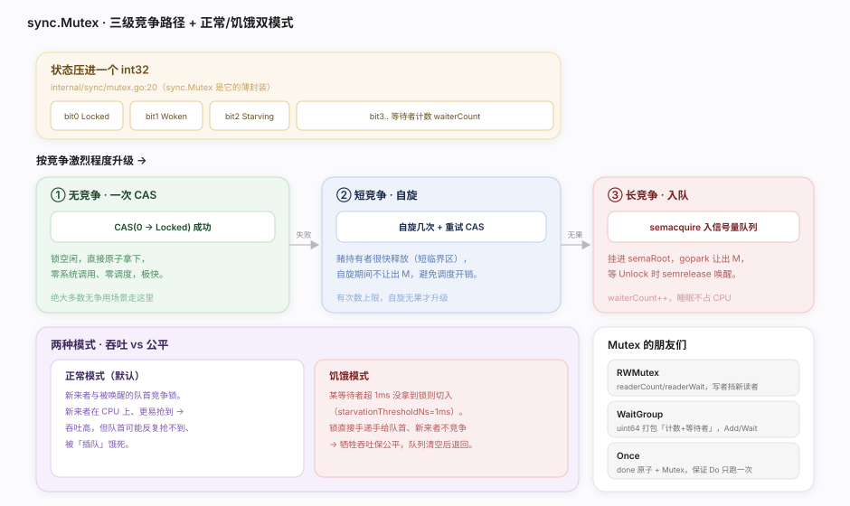
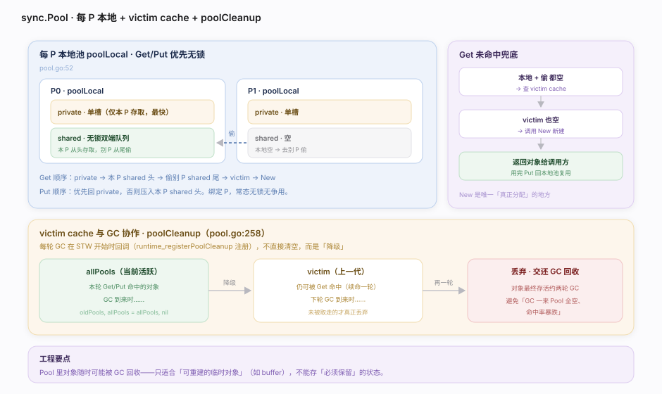
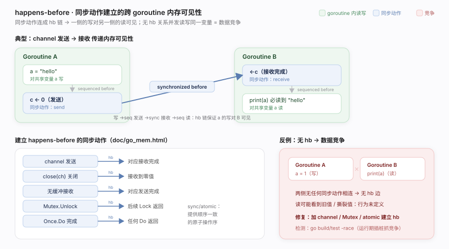
定位
本篇讲 Go 的 CSP 式并发原语——channel、select、sync 包，以及底层的信号量与内存模型。属"同步能力域"，向下依赖【GMP调度】的 park/ready（所有阻塞都归到 gopark/goready）、【分配器】（channel/sudog 分配），与【goroutine 生命周期】互为表里（谁触发阻塞唤醒）。源码基准 go1.26.4（~/workdir/go/src/runtime、src/sync）。
一句话总纲
Go 奉行 CSP「用通信共享内存」：channel（hchan 环形缓冲 + sendq/recvq 等待队列）收发经 chansend/chanrecv 走「有等待对家则手递手直传 → 否则入/出缓冲 → 再否则包成 sudog 挂队列并 gopark 让出 M」，无缓冲 channel 强制收发同步握手；select 经 selectgo 随机公平轮询多路、全不就绪则同时挂所有 channel 队列；sync.Mutex 是「无竞争 CAS + 短竞争自旋 + 长竞争入 semaRoot treap 信号量队列」的混合锁并有正常/饥饿双模式防饿死，sync.Pool 用每 P 本地 + victim cache 让对象跨两轮 GC 存活——所有阻塞底层都归到调度器 park/ready（阻塞 goroutine 而非线程），并发正确性由内存模型的 happens-before 关系（channel/锁/atomic）保证、数据竞争用 -race 抓。
调优要点
- go build -race / go test -race：数据竞争检测器（运行期插桩，慢 5~10×，但抓竞争极准）。
- GODEBUG=asyncpreemptoff=1 等影响锁自旋行为（调试）。
- channel 容量选择：无缓冲 = 强同步握手；有缓冲 = 解耦生产消费速率，但容量过大掩盖背压。
- sync.Pool 适用场景：高频短生命临时对象；不适合有状态/必须保留的对象。
- 优先 channel/context 传递而非共享内存 + 锁；锁竞争激烈时看 sync.RWMutex 或分片锁。
常见误区与工程要点
- 误区：channel 一定比锁慢/快。 各有场景。channel 适合"传递所有权/编排流水线"，Mutex 适合"保护共享状态的小临界区"。无缓冲 channel 收发要两次调度切换。
- 误区：Mutex 只是自旋锁 / 只是信号量。 是混合：无竞争 CAS、短竞争自旋、长竞争入信号量队列，且有正常/饥饿双模式防饿死。
- 误区：sync.Pool 能当缓存用。 不能。Pool 对象每轮 GC 会被清理（victim cache 最多续一轮命），只适合可重建的临时对象。
- 误区：select 会按 case 书写顺序选。 不。多 case 就绪时随机等概率选（防饥饿）。
- 误区：给 channel 加大缓冲能解决所有阻塞。 掩盖背压而非解决——缓冲满了照样阻塞，且延迟问题被隐藏。
- 归属提醒：所有阻塞的 park/ready 机制在【GMP调度】；sudog/G 状态在【goroutine 生命周期】；Pool 与 GC 的清理时机细节在【GC】。
Go 原理 · defer / panic / recover
4 图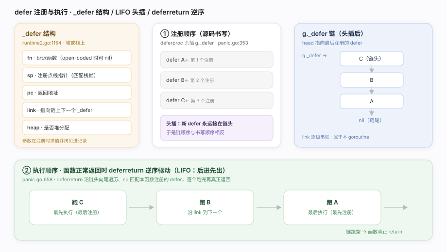
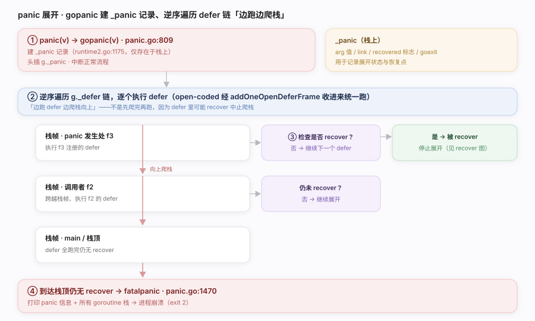
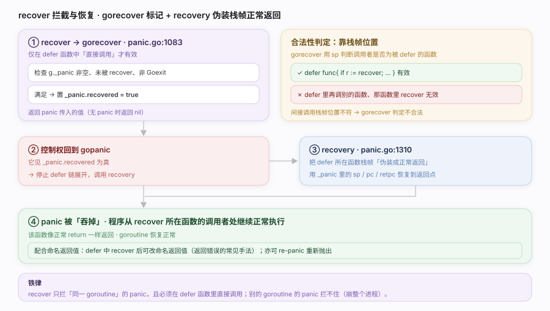
定位
本篇讲 Go 的延迟调用与异常机制——defer 如何注册、panic 如何沿 defer 链展开、recover 如何拦截。属"执行控制能力域"，依赖【栈管理】（_defer/_panic 记录在栈上、panic 展开要遍历栈帧）、【SSA后端】（open-coded defer 由编译器在函数出口内联）、被【goroutine 生命周期】依赖（goexit 时跑完 defer）。源码基准 go1.26.4（~/workdir/go/src/runtime/panic.go）。
一句话总纲
Go 的延迟与异常用两套 defer 实现：简单函数（defer≤8、不在循环）走 open-coded——编译器把 defer 存进栈上槽位 + deferBits 位掩码、在函数出口内联展开，几乎零开销；否则回退堆 _defer 链（deferproc 头插、deferreturn LIFO 执行，参数注册时即求值）；panic 经 gopanic 建栈上 _panic 记录并逆序遍历 defer 链「边跑边爬栈」，每个 defer 里若 gorecover（仅在 defer 内直接调有效）标记 recovered，则 recovery 把该函数栈帧伪装成正常返回、吞掉 panic 继续执行，否则展开到栈顶 fatalpanic 打印栈并崩溃——Goexit 借同一机制走 defer 但不可被 recover。
调优要点
- GOTRACEBACK（none/single/all/system/crash）：控制 panic 时打印栈的详细度；crash 会生成 core dump。
- open-coded defer 已让"简单函数里的 defer"几乎零成本——不必为性能刻意避免 defer（老 Go 的建议已过时）。
- 热点循环里的 defer 会走堆链（较慢），必要时手动在循环外释放或改结构。
- panic/recover 不是常规错误处理——Go 用返回 error；panic 留给"不可恢复的程序错误"（越界、nil 解引用）或跨多层的少数场景（如解析器）。
常见误区与工程要点
- 误区：defer 很慢，热路径要避免。 Go 1.14+ 的 open-coded defer 让简单场景几乎零开销，这条老建议已过时；只有循环里的 defer 才走较慢的堆链。
- 误区：defer 参数在执行时求值。 不。注册时就求值并拷贝（defer fmt.Println(i) 打印的是 defer 那行的 i）。
- 误区：recover 能拦任何地方的 panic。 只能拦同一 goroutine、且必须在 defer 函数里直接调用。别的 goroutine 的 panic 拦不住（会崩整个进程）。
- 误区：recover 可以嵌套间接调用。 不。gorecover 靠调用栈帧位置判定，必须是被 defer 的函数直接调 recover。
- 误区：panic 是异常，应像 try/catch 那样用。 不。Go 惯用返回 error；panic 仅用于不可恢复错误或极少数跨层场景。
- 归属提醒：open-coded defer 的编译期内联在【SSA后端】；_defer/_panic 栈上记录的搬移在【栈管理】的 copystack；goexit 时跑 defer 在【goroutine 生命周期】。
Go 原理 · 接口与反射
6 图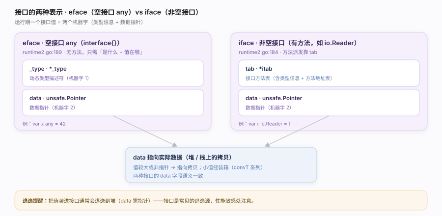
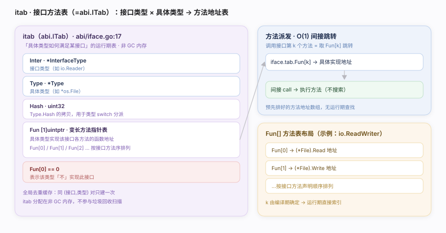
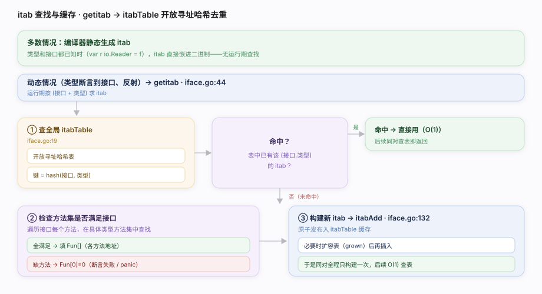
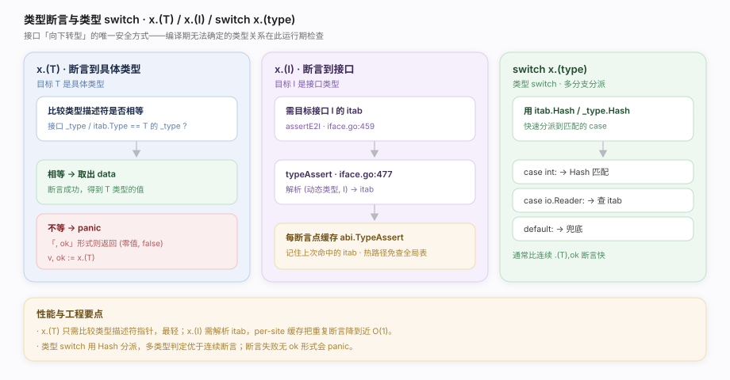
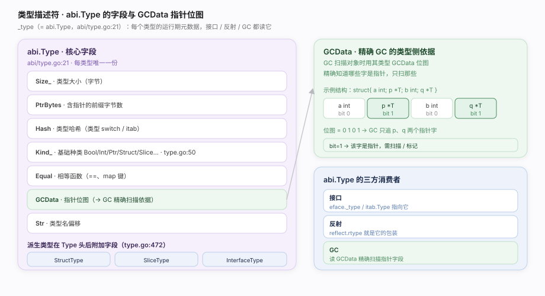
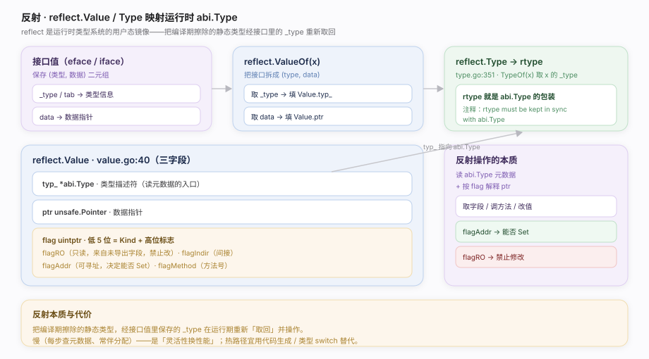
定位
本篇讲 Go 的接口动态派发与反射——interface 在内存里长什么样、类型断言怎么查、reflect 如何映射到运行时类型信息。属"类型系统运行期能力域"，依赖【编译前端】生成类型描述符与 itab、【SSA后端】布局方法表、被【GC】依赖（类型描述符的 GCData 指针位图指导扫描）。源码基准 go1.26.4（~/workdir/go/src/runtime、src/reflect、src/internal/abi）。
一句话总纲
Go 接口是隐式实现的动态派发：接口值是两个机器字——空接口 eface（_type + data）、非空接口 iface（itab + data）；itab（=abi.ITab）以「接口类型 × 具体类型」为键、Fun[] 存好各方法的具体地址，派发即 tab.Fun[k] O(1) 间接跳转，getitab 查全局 itabTable 哈希缓存并去重、类型断言 typeAssert 用每断言点缓存加速；类型描述符 _type（=abi.Type）携 Size/Kind/Equal 与 GCData 指针位图（GC 精确扫描的类型侧依据）；reflect 是这套运行时类型信息的用户态镜像——rtype 就是 abi.Type 的包装、Value 用 (typ,ptr,flag) 读元数据并按 flag（可寻址/只读）解释数据，本质是把编译期擦除的静态类型经接口里保存的 _type 在运行期取回操作，灵活但慢。
调优要点
- 反射慢：热路径避免 reflect；能用代码生成（go generate）或类型 switch 替代就替代。
- 接口装箱逃逸：fmt.Println(x) 把 x 装进 any 常导致逃逸——性能敏感处注意（见【逃逸分析】）。
- 类型 switch 通常比连续 .(T),ok 断言快（用 Hash 分派）。
- -gcflags=-m 看接口转换是否导致逃逸。
常见误区与工程要点
- 误区：装了 nil 指针的接口 == nil。 错！var p *T = nil; var i any = p 时 i != nil——接口有类型信息（type=*T）就非 nil。返回 error 时最经典的坑。
- 误区：接口方法派发要搜索方法表。 不。itab 的 Fun[k] 是预先排好的方法地址数组，派发是 O(1) 间接跳转。
- 误区：接口值总是零成本。 不。把值装进接口常触发逃逸到堆（data 需指针）+ itab 查找；小值有装箱开销。
- 误区：reflect 能改任何值。 只能改可寻址且非只读的 Value（来自 reflect.ValueOf(&x).Elem，且非未导出字段）。
- 误区：Go 泛型出现后接口就没用了。 不。泛型是编译期参数化，接口是运行期动态派发；两者场景不同（见【泛型实现】）。
- 归属提醒：itab/类型描述符的静态生成在【编译前端】/【SSA后端】；GCData 位图指导的扫描在【GC】；接口装箱的逃逸判定在【逃逸分析】。
Go 原理 · 编译前端
4 图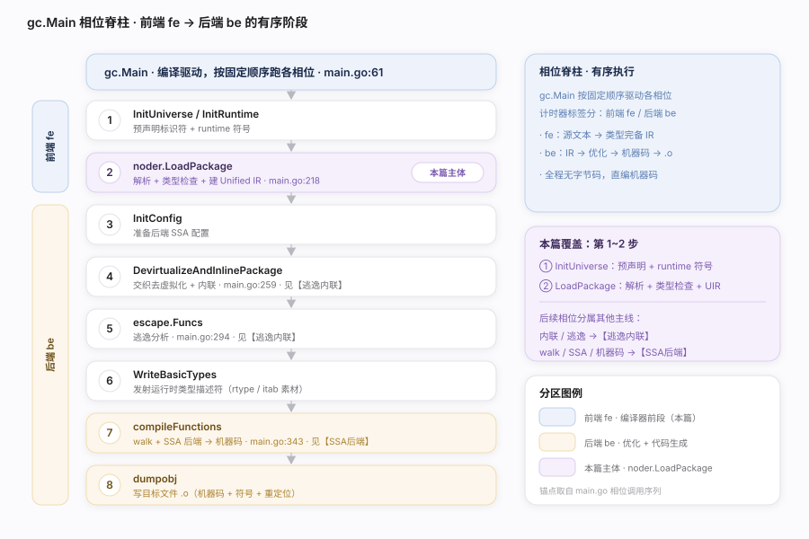
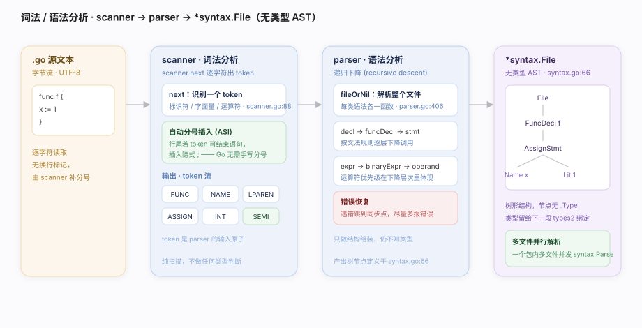
定位
本篇是编译期工具链的第一段——把 .go 源文本变成类型完备的中间表示（IR）。属"编译能力域"，是【SSA后端】的上游（产出 IR 供其消费），也是【逃逸内联】【泛型】的宿主阶段，生成【接口与反射】所需的类型描述符/itab。统领 gc.Main 的相位脊柱。源码基准 go1.26.4（~/workdir/go/src/cmd/compile/internal）。
一句话总纲
Go 官方 gc 编译器前端由 gc.Main 相位脊柱驱动：syntax 包先并行把各 .go 文件词法扫描（含自动分号插入）+ 递归下降语法分析成无类型的语法树，types2（与 go/types 同算法）经 checkFiles 的有序阶段（收集对象→定包级类型→检查所有函数体→初始化顺序→泛型单态化检查）做语义分析、给每个表达式绑定类型并报类型错误，再由 noder 建 Unified IR——一种统一序列化格式，既写完立即读回建后端 ir.Node 树、又作为导出数据支撑下游包的跨包内联与泛型实例化（消除了「编译内表示」与「导出格式」两套的不一致）——前端产物是一棵类型完备的 IR 树 + 可跨包传播的 UIR，交给中后端，全程无字节码、直编机器码。
调优要点
- go build -gcflags=-m：打印编译器优化决策（逃逸、内联）——虽属后端，但从前端 IR 流下来。
- -gcflags=-W：dump 类型检查后的 IR（调试编译器）。
- -gcflags=-l：禁内联；-N：禁优化（配合 delve 调试）。
- GODEBUG=gotypesalias=…：控制类型别名处理（1.22+ 别名类型演进）。
- 编译慢的常见原因：巨型包、大量泛型实例化、cgo——可拆包并行编译（见【go命令与链接】的 Action 图）。
常见误区与工程要点
- 误区：Go 有 VM/字节码。 没有。gc 直接编译到机器码；无字节码解释层（区别于 Java/Python）。
- 误区：类型检查在解析时同步做。 分阶段：先全部解析成语法树（无类型），再统一类型检查——因为要处理跨声明依赖。
- 误区：Unified IR 是又一种字节码。 不。UIR 是编译期序列化格式，用于建 IR + 跨包导出，不在运行期存在。
- 误区：import 一个包会重新编译它的源码。 不。import 读的是该包已编译产物的 UIR 导出数据（含可内联函数体、泛型模板）。
- 归属提醒：内联/逃逸虽在前端之后的相位跑，归【逃逸内联】；泛型的 types2 推断细节归【泛型实现】；walk→SSA→机器码归【SSA后端】。
Go 原理 · SSA 后端
5 图定位
本篇是编译期工具链的第二段——把前端 IR 编译成机器码。属"编译能力域"，上游是【编译前端】（消费其 IR）、下游是【go命令与链接】（产目标文件供链接）。它是【GC】写屏障、【栈管理】栈检查、【defer/panic】open-coded defer 的编译期插桩点。源码基准 go1.26.4（~/workdir/go/src/cmd/compile/internal/ssa、ssagen）。
一句话总纲
Go 后端把前端 IR 经 walk 降级后 buildssa 转成 SSA（Value/Block 组成的 CFG，每个值只赋值一次），由 ssa.Compile 跑约 60 遍有序 pass——先机器无关优化（opt 重写规则做常量折叠/强度削弱、cse 消公共子表达式、prove 消边界检查、writebarrier 为指针写插 GC 写屏障、deadcode 消死码），再经分水岭 pass lower 转成机器相关 SSA（目标架构具体指令），后接 schedule 调度、flagalloc、线性扫描 regalloc（寄存器不够则溢出到栈）；genssa 逐 Value 调架构后端翻成 obj.Prog 并插入函数序言的栈检查/尾声，obj 汇编器编码成机器码字节 + 重定位写进目标文件——后端还是 GC 写屏障、栈抢占检查、open-coded defer、race 插桩的编译期插桩点，把运行期机制缝进代码。
调优要点
- -gcflags=-S：打印生成的汇编；GOSSAFUNC=FuncName go build 生成该函数的 SSA 各 pass HTML 可视化（ssa.html，逐 pass 看 IR 变化——极强的学习/调试工具）。
- -gcflags="-N -l"：禁优化禁内联，配 delve 调试（否则变量被优化掉）。
- -gcflags=-d=ssa/check/on：开 SSA 一致性检查。
- 边界检查开销：prove pass 已消大量冗余；-gcflags=-B 可禁边界检查（危险，一般不用）。
- SIMD：1.26 有 cpufeatures/SIMD 相关 pass；向量化优化按架构启用。
常见误区与工程要点
- 误区：Go 优化很弱。 Go 优先编译速度，但 SSA 后端有常量折叠、CSE、边界检查消除（prove）、内联、逃逸分析等主流优化——只是不做激进的 LTO/PGO 级全局优化（PGO 1.21+ 已支持）。
- 误区：每个函数编译要串行。 不。函数级 SSA 编译可并行（compileFunctions 多 worker）。
- 误区：写屏障是运行时自己加的。 不。是编译器 writebarrier pass 在每个指针写处插入的——运行期只是执行被插入的屏障代码。
- 误区：lower 之前的 SSA 就是最终形态。 不。lower 是分水岭——之前机器无关，之后才用目标架构具体指令。
- 归属提醒：IR 来源在【编译前端】；写屏障算法在【GC】、栈检查机制在【栈管理】（本篇只讲"在哪插入"）；目标文件如何链接成二进制在【go命令与链接】。
Go 原理 · 逃逸分析与内联
5 图定位
本篇讲两项决定"分配在哪、调用是否展开"的编译期优化——逃逸分析（栈 vs 堆）与内联。属"编译能力域"，是【编译前端】之后、【SSA后端】优化前的相位（gc.Main main.go:259/294）。逃逸分析决定了【分配器】的负载（多少对象上堆），内联影响【SSA后端】的优化机会。两者交织进行。源码基准 go1.26.4（~/workdir/go/src/cmd/compile/internal/escape、inline）。
一句话总纲
Go 用编译期逃逸分析替代手动内存管理：escape.Batch 对 AST 做静态数据流分析——把变量抽象成 location 节点、赋值/取址/解引用建带权（deref−addressof）有向边，从「返回值/堆位置」反向传播标记 attrEscapes，并把结果存成跨函数复用的参数标签；「函数返回后仍被引用」（返回指针、接口装箱、闭包捕获逃逸）的值 moved to heap、否则留栈（栈分配零 GC 成本，故 new/& 不必然上堆）；内联由 CanInline 按预算成本模型（hairyVisitor 累加、上限 inlineMaxBudget=80、PGO 热点提到 2000）判定，支持 mid-stack inlining（含调用的非叶函数）并与去虚拟化交织放大；gc.Main 让内联先于逃逸分析，因内联打开跨函数视野使更多对象判定不逃逸而留栈——大幅降低 GC 压力，是 Go 性能的重要来源。
调优要点
- -gcflags=-m（逃逸决策）、-m -m（详细路径）——性能优化第一工具。
- -gcflags=-l（禁内联）、//go:noinline（单函数禁）——基准对比。
- -gcflags=-d=inlfuncswithclosures=1 等调内联启发式（高级）。
- -pgo=auto（1.21+）：用 default.pgo 剖析数据做 PGO 内联/去虚拟化。
- 减少逃逸的手法：返回值而非指针（小结构）、避免不必要的接口装箱、预分配、复用（sync.Pool）。
常见误区与工程要点
- 误区：new/& 一定分配在堆。 不！x := new(T) 或 &x 若不逃逸，分配在栈——是否上堆由逃逸分析定，不由语法定。这是 Go 与 C++ 的关键差异。
- 误区：逃逸分析是运行时行为。 不。纯编译期静态分析，运行期无逃逸判定开销。
- 误区：内联总是更快。 不一定。过度内联使代码膨胀、指令缓存压力增、栈帧变大——所以有预算上限（80）。
- 误区：只有叶子函数能内联。 Go 支持 mid-stack inlining，含调用的函数也能内联。
- 误区：接口方法调用无法优化。 去虚拟化能把可静态确定的接口调用变成直接调用，进而可内联。
- 归属提醒：逃逸判定后的堆分配实现在【分配器】；内联/逃逸产出的 IR 交【SSA后端】继续优化；接口装箱的运行期表示在【接口与反射】。
Go 原理 · 泛型实现
5 图定位
本篇讲 Go 1.18 引入的泛型如何编译——类型参数、约束、以及 GC shape stenciling + 字典的混合实现策略。属"编译能力域"，横跨【编译前端】（types2 类型推断/实例化）与【SSA后端】（生成实例化代码），产出的类型信息供【接口与反射】。源码基准 go1.26.4（~/workdir/go/src/cmd/compile/internal/types2、noder）。
一句话总纲
**Go 泛型在「全单态化（快但膨胀）」与「类型擦除装箱（小但慢）」间取折中——用 GC shape stenciling + 字典：前端 types2 做类型推断、实例化与 monomorph 非法递归实例化检查保证类型安全；后端 Shapify 把类型实参坍缩成「GC 形状」（所有指针类型归一为 *byte、非指针按底层类型，形状放假包 go.shape），同形状实例共享一份机器码（体积收敛到形状数而非类型数）；丢失的具体类型信息由「编译期字典 readerDict」补回——作为合成首参传入，函数体中 new(T)/方法调用/比较等处从字典取具体类型（含 itab），字典分 shaped/non-shaped——「代码按形状共享 + 字典按实例区分」既省二进制体积（Go 指针极多，共享收益大）又保住值类型特化能力。**
调优要点
- -gcflags=-m 观察泛型实例化后的内联/逃逸。
- 泛型 vs 接口的选择：编译期确定类型且性能敏感用泛型（值类型特化、无装箱）；运行期多态用接口。
- 过度泛型化会增编译时间与二进制体积（每形状一份代码）——非必要不泛型。
- GOSSAFUNC 可看某泛型实例化后的 SSA。
常见误区与工程要点
- 误区：Go 泛型是全单态化（像 C++）。 不。是 GC shape stenciling——按形状分组，指针类型共享代码，比全单态化省体积。
- 误区：Go 泛型是类型擦除（像 Java）。 也不是。值类型仍特化（不装箱），比擦除快；靠字典保住类型信息。
- 误区：泛型零运行期开销。 有轻微开销——隐藏字典参数、指针形状经字典的间接。值类型场景开销小。
- 误区：约束是新语法概念。 约束就是接口（扩展了类型集语法 ~T|...）。
- 误区：能写泛型方法。 不能。Go 方法不能有自己的类型参数（只有函数和类型可以）——一个刻意的限制。
- 归属提醒：类型推断/实例化的语义检查在 types2（本篇），归【编译前端】的相位；实例化代码的优化/发射在【SSA后端】；字典里的 itab 与【接口与反射】相关。
Go 原理 · go 命令与链接
5 图定位
本篇讲工具链的"驱动者与收尾者"——go 命令如何编排构建（Action 图 + 模块解析 MVS），链接器如何把一堆目标文件收成单一可执行文件。属"编译能力域"的两端：go build 调度【编译前端】+【SSA后端】编译每个包，链接器把它们 + runtime 拼成二进制。源码基准 go1.26.4（~/workdir/go/src/cmd/go/internal、cmd/link/internal/ld）。
一句话总纲
go build 是构建编排器而非编译器本身：先 load 加载包、modload+MVS（最小版本选择 mvs.BuildList——取「满足所有 go.mod 要求的最高但不主动升级」的版本，确定性可重现、无需 lock 文件）定依赖版本，再把「编译各包/汇编/链接」组织成 Action 图由 Builder.Do 按拓扑序并行执行、每个 Action 以输入内容哈希成 build ID 命中缓存实现增量编译；每个「编译包」Action 调 compile（前端+后端）产目标文件，最后「链接」Action 调链接器 ld.Main——经 loadlib 加载所有目标文件+runtime、deadcode 从入口 flood fill 可达性剔除死代码（接口方法按其接口是否被用保留，防二进制爆炸）、textaddress 布局代码、pclntab 生成地址→行号/栈图映射（供栈回溯/panic/GC 扫描）、dodata 布局数据、Asmb 编码成 ELF/Mach-O——收成一个静态自包含可执行文件（runtime/GC/调度器全链入，零依赖部署）。
调优要点
- go build -p N：编译并行度（Action 图并行执行）；-a 强制全重编。
- go build -debug-actiongraph=f：dump Action 图看构建结构。
- -ldflags="-s -w"：去符号表 + DWARF，减小二进制（牺牲调试信息）。
- -trimpath：去源码路径，可重现构建。
- -pgo=auto（1.21+）：启用 PGO；-race/-msan/-asan：插桩构建。
- GOFLAGS/GOCACHE/GOMODCACHE：全局构建行为与缓存位置。
常见误区与工程要点
- 误区：Go modules 选最新版本。 相反——MVS 选满足所有要求的最小版本，稳定优先，不主动升级。
- 误区：Go 需要 lock 文件锁版本。 不。MVS 的确定性使 go.mod 图本身就唯一确定版本集；go.sum 只管完整性校验。
- 误区：import 大包会把整个包链进二进制。 不。链接器 死代码消除（flood fill）只保留可达符号——只用一个函数理想情况只链那部分。
- 误区：Go 二进制大是因为没优化。 Go 二进制含完整 runtime + GC + 类型信息 + pclntab（静态自包含的代价），死代码消除已尽力裁剪；换来的是零依赖部署。
- 误区：go build 就是编译器。 不。它是编排器——调度 compile（真编译器）+ link，管依赖/版本/缓存/并行。
- 归属提醒：单个包的编译细节在【编译前端】+【SSA后端】；pclntab 服务的栈回溯/扫描在【栈管理】/【GC】；接口方法可达性分析关联【接口与反射】。